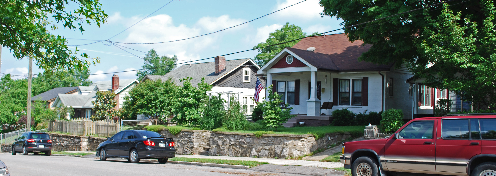

In this project, I transformed raw data on Nashville housing in SQL Server. This included standardizing dates, handling NULL values, and splitting address fields for better organization. I also standardized fields, removed duplicates, and dropped unused columns to enhance data quality and prepare it for analysis.


Data Exploration of COVID-19 Dataset in BigQuery
In this project, I utilized Joins, CTEs, Temp Tables, and Window Functions to analyze global COVID-19 trends.

Dashboard Visualization of Global COVID-19 Impact
In this project, I designed an interactive dashboard visualizing COVID-19 metrics across continents and countries.
Data Exploration and Visualization of Variables in Health Insurance Charges
In this project, I used statistical analysis to explore the relationships between quantitative and qualitative variables and insurance charges. I also developed a linear regression model to predict insurance costs based on individual attributes.